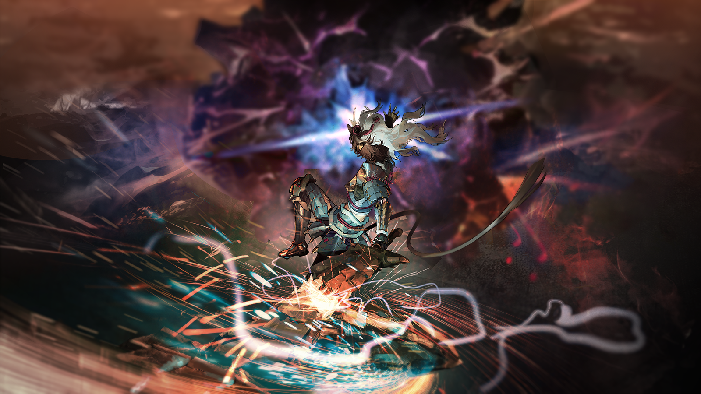

宝巫迦
唔......
宝巫迦
为什么，吾的身体到底怎么了——

空爆
交给我吧！

宝巫迦
空爆？！

梓兰
空爆，别分神！
空爆
我知道！
宝巫迦
梓兰小姐，你们——

空爆
嘿嘿，看来我们来得还算及时！

梓兰
宝巫迦，你的身体怎么了？
宝巫迦
吾......不知道，只是，吾能感觉到，有一股无比邪恶的能量在牵引着吾的身体......

空爆
放心吧，这里交给你空爆姐姐就好了！

空爆
这家伙看来就是真正的“异兽”了。只要解决掉这家伙就能回家了对吧？
空爆
梓兰姐，掩护我！
超高输出属性解放斩，刚听到这个名字的时候，空爆就觉得很威风，她很喜欢。
当然，她更喜欢这一招的意图，利用斧头击打地面，然后顺着那股力量，借由翔虫高高跃起，挥出斧头！
先确认强属性瓶的充能状况，没问题，充能。盾上的红光闪烁，像是在催促她一样。
观察猎物——熔火蜗因为刚才的防御而出现了破绽，绝妙的机会。

跳起来——用盾斧击打地面，提供最初的动能，同时，让翔虫把自己拉到半空中，哈，发明这招的人真是个天才！

空爆
它不会又爬起来吧？！

宝巫迦
放心，“异兽”彻底死了。
梓兰
宝巫迦，你......

宝巫迦
吾的身体没事了。吾能感觉到，刚才一直牵引着吾的某种东西消失了。

梓兰
那究竟是什么？

宝巫迦
吾......不知道。

宝巫迦
不过，至少两位可以放心，吾等已经完成了对“异兽”的狩猎。接下来，吾会按照传统，将两位送回家乡。

月见夜
恭喜陛下。
宝巫迦
客套话就免了吧，月见夜。

月见夜
我是发自内心地为陛下和两位“异兽猎人”的胜利感到高兴。
宝巫迦
既然你为吾等高兴，就该让吾去找“雷之主”。
月见夜
这是两码事。

梓兰
行了，听你说这些我就头疼。现在“异兽”也解决了，下一步我们该怎么回去？
月见夜
接下来，请陛下净化“异兽”尸体，启动“御轮”，将两位“异兽猎人”送回去吧。
宝巫迦
归还祭典呢？
月见夜
陛下。
宝巫迦
这是传统。

空爆
祭典？
宝巫迦
这场祭典，既是为了感谢“御轮”的馈赠，也是为了告别“异兽猎人”。
宝巫迦
吾等会将“异兽”的尸体运回，由吾通过仪式净化“异兽”的尸体。
宝巫迦
而后，国民们会提取其中最有用的部位，制作成相应的武器或者道具送给“异兽猎人”作为纪念。
宝巫迦
其余的部分，则或成为食材，或成为装饰，变成祭典的一部分。
宝巫迦
而在祭典的最后，吾将启动“御轮”，将“异兽猎人”送回家乡。
宝巫迦
月见夜，你要让两位“异兽猎人”以为吾国不知感恩吗？

月见夜
......换作以往，听说“异兽”被狩猎，泡影国的人们或许会欢欣鼓舞。
月见夜
但现在，“雷之主”的影响还未消去，不是举办祭典的时候。

宝巫迦
就算是这样——

梓兰
打住。
月见夜&宝巫迦
梓兰小姐怎么看？

梓兰
我们本来就急着回家，就算真的要举办祭典，我也未必有兴致。
梓兰
泡影国的人们对我们已经付出了足够多的善意，我们也不需要你们再做些什么。
梓兰
况且，月见夜说的也对，事急从权，就这样吧。
月见夜
感谢你的理解，梓兰小姐。
梓兰
不过，这样就可以了吗？
宝巫迦
......是的，这样就可以了。

政宗
梓兰刚才问陛下的那句话是什么意思喵？
空爆
梓兰姐是问宝巫迦，她真的只狩猎“异兽”熔火蜗就可以了吗？
空爆
而宝巫迦做出了肯定的答复。
政宗
真奇怪喵，梓兰不是最想回去的人喵？为什么这个问题听起来像是，如果宝巫迦想要深究雷狼龙的问题，她会帮忙喵？
政宗
这不是自找麻烦喵？
空爆
梓兰姐就是这样的人。
空爆
嘴上说着不想管别人的麻烦，只想做好自己的事，结果不知不觉就会去插手别人的问题。
空爆
然后美其名曰——“不这么办还能怎么办？”
政宗
听起来真矛盾喵。

空爆
梓兰姐就是很矛盾喵。

政宗
不要学我说话喵！

梓兰
又在背后说我什么坏话呢？

空爆
哪有，我在说梓兰姐是全天下最好的队长呢。
梓兰
我信你就见鬼了。
宝巫迦
梓兰小姐，空爆小姐，既然事急从权，那吾便在此地进行仪式了。

梓兰
好。
宝巫迦
请退后一些。
梓兰
她要做什么？
空爆
我知道了，宝巫迦又要跳舞了。
空爆
梓兰姐，瞧着吧，这可能是我们最后一次看到了。

梓兰
跳舞？

空爆
没错。
宝巫迦
以吾身为囚——
随着她的舞蹈，熔火蜗尸体上残留的黑气开始被牵引，缓慢而有序地被宝巫迦吸收。
她的脸色变得愈发苍白，但眼神却异常坚定。
黑气经过她的身体，似乎被某种力量“过滤”，最终化作纯净的无色能量，涌向她身后的“御轮”。
“御轮”的圆弧开始发出柔和的白光，光芒越来越亮，随后，一扇银白色的“门”出现在宝巫迦的身侧。
空爆
成功了！梓兰姐，快看！我们可以回家了！
梓兰
空爆，等等！不对劲！
空爆
咦——
宝巫迦
听吾之命——
“御轮”的光芒在达到顶点的瞬间，毫无征兆地熄灭了。天地间仿佛被抽走了声音和色彩，陷入一片死寂。
纯白色的“门”眨眼间变成了黑色，紧接着，一股更加深沉的黑暗从这道“门”中喷涌而出。
空爆
这家伙......长得像牙兽，但又根本不是牙兽......到底是怎么回事？！
宝巫迦
咒鬼......为什么咒鬼会出现在这里？！

空爆
咒鬼？！
梓兰
月见夜，到底怎么回事？！

月见夜
咒鬼是禁忌......
月见夜
在泡影国的历史上，曾经发生过一次巨大的灾难，在那次灾难之中，被“诅咒”侵染的狼群毁灭了曾经的泡影国。
月见夜
这些被“诅咒”侵染的狼，正是咒鬼。
月见夜
从那次灾难中幸存下来的先祖们，在重新建立了泡影国之后，将周边的狼狩猎殆尽......
梓兰
狼......你是说牙兽？
空爆
宝巫迦，这门里还在不断往外涌出咒鬼，不能想想办法吗？！
宝巫迦
吾做不到！
宝巫迦
有什么东西在阻止它关上！
宝巫迦
这些咒鬼......它们的存在就预示着灾祸，难道是吾将它们召来——
梓兰
别慌神，这不是你的错，宝巫迦！
月见夜
没错，陛下，您的行动没有丝毫问题！一定是有其他东西——
众人惊恐地抬头望去，只见远方的山崖之上，一头通体覆盖着青色鳞甲、周身缠绕着青白色雷电的巨兽，正昂首发出咆哮。
它站在高高的山崖上，睥睨正在发生的一切。
空爆
“雷之主”？！
梓兰
这家伙，难道说是它影响了“御轮”？！
宝巫迦
“雷之主”，难道是你......你一直都在等待着这一刻吗？
宝巫迦
你之所以没有来干扰吾的狩猎，是因为你一直都在等待吾启动“御轮”的这一刻，是吗？！
宝巫迦
回答吾！
宝巫迦
回答吾——！！！！
月见夜
陛下，不可莽撞！
宝巫迦
“雷之主”正在破坏“试炼”！
宝巫迦
难道就算这样你也要阻止吾吗，月见夜？！

月见夜
我——
突然，嘹亮且急促的钟声自远处的山脚下传来。
梓兰
什么声音？！
政宗
这是警报喵！

月见夜
这是狩猎团的紧急警报......平时是不会敲响这道警报的，除非——

武士
将军，大事不好！
武士
从“御轮”方向的雪山脚下和竹林中涌出了大量被“诅咒”侵染的野兽。
武士
它们正在靠近都城！
月见夜
传令下去，让狩猎团立刻组织防线，无论如何，不能让野兽们靠近都城！
武士
将军您呢？我们需要您的指挥！
月见夜
我——我会立刻返回都城。
武士
是！
梓兰
这家伙，不仅拦住了我们回家的路，还从门里召唤了兽群......但是，为什么它会——
空爆
管不了这些了，擒贼先擒王！
空爆
“雷之主”是这些野兽的首领对吧？宝巫迦，我们现在立刻杀到它面前，把它解决掉吧！

宝巫迦
吾......
空爆
宝巫迦？
空爆走到宝巫迦身前拉住她，却发现她纹丝不动。
她这才看到宝巫迦的表情——
咬牙切齿，却又无可奈何。
梓兰
空爆，别说傻话。
梓兰
你怎么保证自己杀到它面前之前，泡影国不会先被咒鬼们消灭？

空爆
但是从门里冒出的黑不溜秋的家伙根本没完没了啊！
空爆
趁现在解决它是最好的办法吧，谁知道它等会儿又会跑到哪里去！
梓兰
别忘了，只有宝巫迦能够消除“诅咒”。
空爆
——啊啊啊啊，可恶！怎么这么麻烦！“雷之主”这个混蛋！
梓兰
至少，在找到一个合适的方法前，我们不能拿泡影国的安危开玩笑。

空爆
可是——
空爆
“雷之主”就在那里！错过这个机会，下次不知道是什么时候了！
月见夜
在过去，我阻止陛下狩猎“雷之主”，归根结底，是因为它尚未对我们露出獠牙。
月见夜
然而，“雷之主”既然已经成为这次灾难的源头，陛下想要讨伐它，我也不好阻拦。

月见夜
但是......
宝巫迦
不用说了。
宝巫迦
梓兰小姐说得对。
宝巫迦
吾是一国之主，即使吾现在杀到它面前，泡影国若是在那之前毁灭，一切又有什么意义？
宝巫迦
回城，准备应对兽潮。
月见夜
陛下英明。
宝巫迦转身向都城走去。
转身前，她深深地看了一眼远处山头上的“雷之主”。
像是要将它的样子刻入灵魂之中。